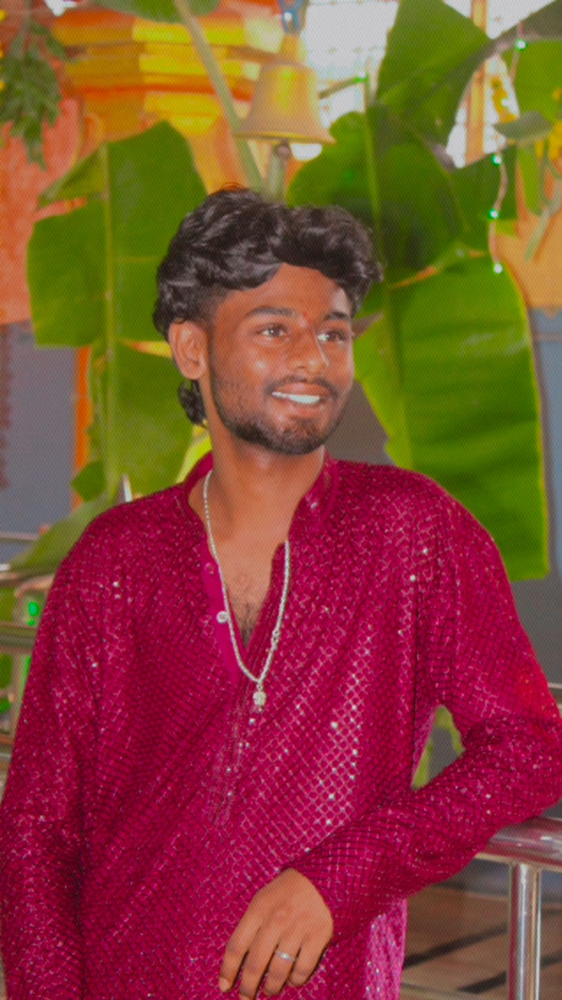

01
Enterprise development
Working with SAP’s application language and reporting fundamentals.
B.Tech graduate · Open to opportunities
Hi, I’m Ranga Venkateswarlu Guturi.
I’m exploring enterprise software, thoughtful AI applications, and the craft of building useful things for the web.

A little about me
I’m a recent B.Tech graduate drawn to the way software can make complex work feel simpler.
I’m building a foundation in SAP ABAP and enterprise application development while exploring Python, AI, and the web. I learn by making things, understanding how they work, and improving them one step at a time.
Right now, that means hands-on practice with ABAP reports and experiments with retrieval-grounded AI projects. I’m keen to keep learning, contribute to a supportive team, and build software people can rely on.
Tools I’m learning & using
Skills I can discuss, practice, and keep building on—without arbitrary proficiency scores.
Working with SAP’s application language and reporting fundamentals.
Core programming concepts, querying, and relational data fundamentals.
Exploring local language models, retrieval workflows, and web foundations.
Selected projects
Small, hands-on explorations in AI, Python, and enterprise development.
A research assistant experiment using retrieval to bring relevant source content into a language model’s context, helping ground answers in the material provided.
Experiments with running language models locally using Ollama and exploring how a Python chat interface can connect to them.
Practice exercises exploring internal tables, classical reports, Open SQL, and report events while building a foundation in ABAP.
No live demos are listed because none have been supplied.
The next chapter
Let’s make something useful
I’m happy to connect about entry-level roles, collaborative projects, or a good conversation about technology and learning.